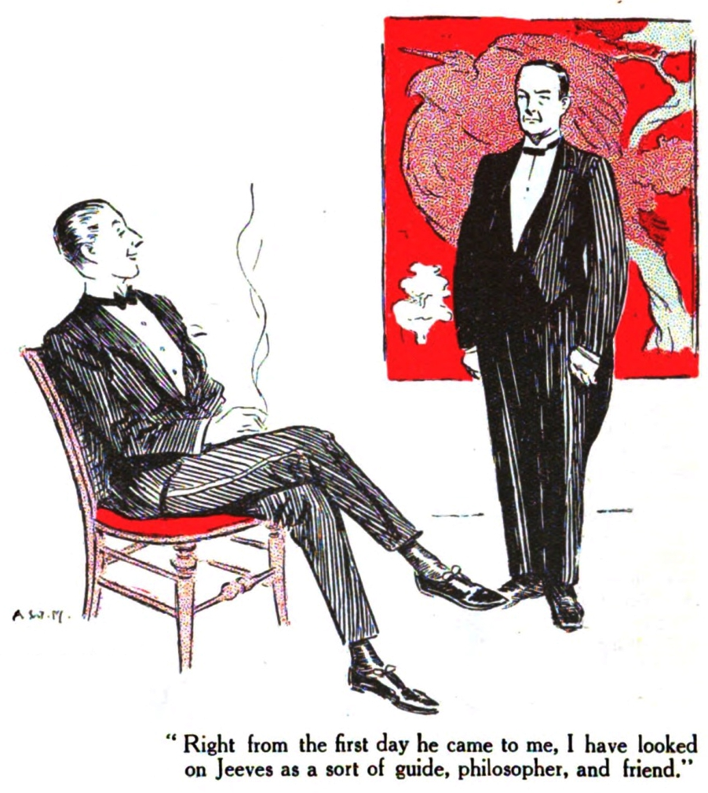
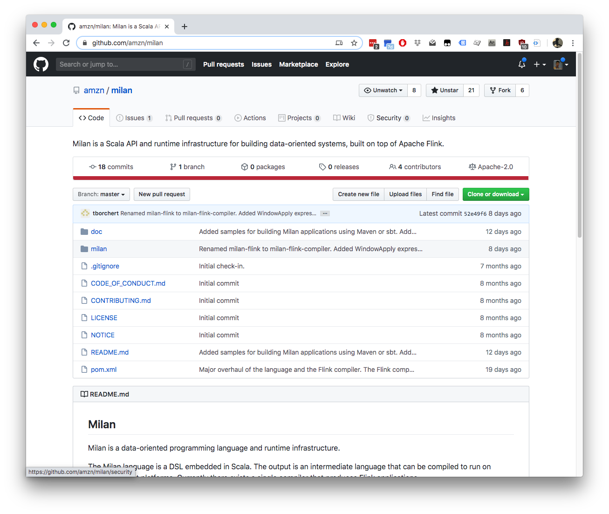
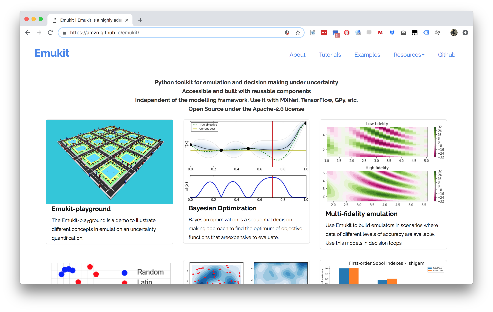

Post-Digital Transformation: Intellectual Debt
The Great AI Fallacy

Artificial vs Natural Systems
- Consider natural intelligence, or natural systems
- Contrast between an artificial system and an natural system.
- The key difference between the two is that artificial systems are designed whereas natural systems are evolved.
Natural Systems are Evolved
Survival of the fittest
?
Natural Systems are Evolved
Survival of the fittest
Herbet Spencer, 1864
Natural Systems are Evolved
Non-survival of the non-fit
Mistake we Make
- Equate fitness for objective function.
- Assume static environment and known objective.
The Mythical Man-month
.jpg)
Technical Consequence
- Classical systems design assumes decomposability.
- Data-driven systems interfere with decomponsability.
Bits and Atoms
- The gap between the game and reality.
- The need for extrapolation over interpolation.
Peppercorns
- A new name for system failures which aren’t bugs.
- Difference between finding a fly in your soup vs a peppercorn in your soup.
Peppercorns
Ride Allocation Prediction
Machine Learning Systems Design
Fragility of AI Systems
- They are componentwise built from ML Capabilities.
- Each capability is independently constructed and verified.
- Pedestrian detection
- Road line detection
- Important for verification purposes.
Computer Science Paradigm Shift
- Von Neuman Architecture:
- Code and data integrated in memory
- Today (Harvard Architecture):
- Code and data separated for security
Computer Science Paradigm Shift
- Machine learning:
- Software is data
- Machine learning is a high level breach of the code/data separation.
Data Oriented Architectures
- Convert data to a first-class citizen.
- View system as operations on data streams.
- Expose data operations in a programmatic way.
Data Orientated Architectures
- Historically we’ve been software first
- A necessary but not sufficient condition for data first
- Move from
- service orientated architectures
- data orientated architectures
Streaming System
- Move from pull updates to push updates.
- Operate on rows rather than columns.
- Lead to stateless logic: persistence handled by system.
- Example Apache Kafka + Apache Flink
Streaming Architectures
- AWS Kinesis, Apache Kafka
- Not just about streaming
- Nodes in the architecture are stateless
- They persist through storing state on streams
- This brings the data inside out
Apache Flink
- Streams and transformations
- a stream is a (potentially never-ending) flow of data records
- a transformation: streams as input, produces transformed streams as output
Join
stream.join(otherStream)
.where(<KeySelector>)
.equalTo(<KeySelector>)
.window(<WindowAssigner>)
.apply(<JoinFunction>)Milan
A general-purpose stream algebra that encodes relationships between data streams (the Milan Intermediate Language or Milan IL)
A Scala library for building programs in that algebra.
A compiler that takes programs expressed in Milan IL and produces a Flink application that executes the program.

Meta Modelling

Trading System
- High frequency share trading.
- Stream of prices with millisecond updates.
- Trades required on millisecond time line
Real Price
Future Price
Hypothetical Streams
- Real stream — share prices
- derived hypothetical stream — share prices in future.
- Hypothetical constrained by
- input constraints.
- decision functional
- computational requirements (latency)
Hypothetical Advantage
- Modelling is now required.
- But modelling is declared in the ecosystem.
- If it’s manual, warnings can be used
- calibration, fairness, dataset shift
- Opens door to Auto AI.
SafeBoda
SafeBoda
With road accidents set to match HIV/AIDS as the highest cause of death in low/middle income countries by 2030, SafeBoda’s aim is to modernise informal transportation and ensure safe access to mobility.
Ride Sharing: Service Oriented
Ride Sharing: Data Oriented
Ride Sharing: Hypothetical
Information Dynamics
- Potential for information feedback loops.
- Hypothetical streams are instantiated.
- Nature hypothesis (e.g. price prediction) can effect reality.
- Leads to information dynamics, similar to dynamics of governors.
- See e.g. Closed Loop Data Science at Glasgow.
Thanks!
twitter: @lawrennd
podcast: The Talking Machines
newspaper: Guardian Profile Page
blog posts:
Brooks, F., n.d. The mythical man-month. Addison-Wesley.